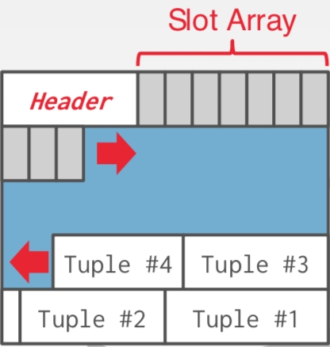
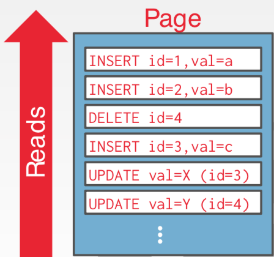
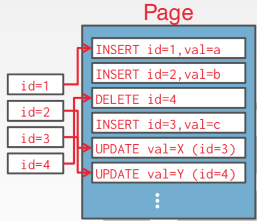
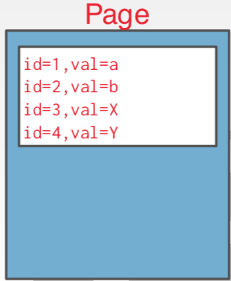

数据库存储（I）
概述
前面我们已经从逻辑层理解了什么是数据库，如何编写查询来读取写入数据。
下面我们学习如何构建一个软件来管理数据库。
主要内容包括：
- 关系数据库
- 存储
- 执行
- 并发控制
- 恢复
- 分布式数据库
- 杂项
课程介绍的存储相关主要内容：
- 查询计划
- 算子执行
- 访问方法
- 缓存池管理器
- 磁盘管理器 \Leftarrow
基于磁盘的架构
DBMS 假定数据库主存储器的位置在非易失性磁盘上。
DBMS 的组件管理在易失性存储与非易失性存储之间的移动。
存储等级结构
| 存储 | 容量 | 速度 | 说明 |
|---|---|---|---|
| CPU 寄存器 | \star | 0.5ns | 易失性存储 |
| CPU Cache | \star\star | 7ns | 易失性存储 |
| DRAM | \star\star\star | 100ns | 易失性存储 |
| SSD | \star\star\star \star | 150,000ns | 非易失性存储 |
| HDD | \star\star\star\star\star | 10,000,000 ns | 非易失性存储 |
| 网络存储 | \star\star\star\star\star\star | ~30,000,000 ns | 非易失性存储 |
系统设计目标
允许 DBMS 管理超过可用内存的数据库。
从磁盘读取和写入代价很高，所以需要仔细管理，避免大的停顿和性能下降。
顺序访问 vs. 随机访问
随机访问 HDD 要比顺序访问慢很多。
传统的数据库系统被设计为最大化顺序访问。
- 算法尝试减少随机页写入数量，这样数据就可以保存在连续的块中。
- 同时分配多个页被称之为 extent。
为什么不使用 OS
可以使用 mmap 将文件的内容映射到进程的地址空间。
OS 负责在内存和磁盘之间移动文件的页。
如果我们允许多个线程访问 mmap 文件以隐藏缺页停顿怎么办？
这种方式对读取访问很好，但是对于多个写操作非常复杂。
对于这个问题，有一些解决方案：
- madvise: 告诉 OS 你期望读取确定的页。
- mlock: 告诉 OS 内存范围不能被换出。
- msync: 告诉 OS 将内存范围刷新到磁盘。
全面使用：monetdb LMDB
部分使用：mongoDB MEMSQL SQLite influxdb
DBMS 通常希望完全自己控制，这样可以更好地开展工作。
- 以正确的顺序将脏页刷到磁盘。
- 专门的预取操作。
- buffer 替换策略。
- 线程/进程调度。
所以，操作系统不是你的朋友。
数据库存储
问题1：DBMS 如何表示磁盘上的文件？
问题2：DBMS 如何管理内存，怎么在磁盘和内存之间来回移动？
文件存储
DBMS 保存数据库为一个或者多个文件。
OS 不了解文件的任何信息。
- 所有的标准文件系统保护被使用。
- 19世纪80年代的早期系统在裸存储上使用定制的文件系统。
存储管理器
存储管理器负责管理数据库的文件。
将文件以页面集合的方式组织。
- 跟踪数据读取/写入到页。
- 跟踪可用的空间。
数据库页面
一个页面是一个固定大小的数据块。
- 可以包含元组、元数据、索引、日志记录等等。
- 大部分系统不会混合页面类型。
- 一些系统要求页面是自包含的。
每一页被赋予一个唯一的标识符。
- DBMS 使用一个间接层来映射页面 id 到物理位置。
在 DBMS 中，有三种不同的页标记：
- 硬件页（通常4KB）
- OS 页（通常4KB）
- 数据库页（1~16KB）
通过硬件页面，我们的意思是设备可以保证“故障安全写入”的级别。
- 1KB: SQLite
- 4KB: DB2 ORACLE
- 8KB: SQL Server; PostgreSQL
- 16KB: MySQL
页面存储架构
不同的 DBMS 以不同的方式管理磁盘文件中的页。
- 堆文件管理
- 顺序/排序文件管理
- 哈希文件管理
在层次结构的这一点上，我们不需要知道页面内部的内容。
数据库堆
堆文件是一个未排序的页面集合，元组以任意的顺序存放
- 获取/删除页面
- 还要支持在所有页上迭代
需要元数据保持跟踪什么页存在，哪个页有空余空间。
两种方式表示堆文件：
- 链表
- 页目录
堆文件：链表
在文件的开始维护一个头页面保存：
- 空闲页面链表的头。
- 数据页面链表的头。
每个页面保持跟踪自己空闲的槽位数量。

堆文件：页目录
DBMS 维护特殊的页面来跟踪数据页在数据库文件中的位置。
目录还记录每页的空闲槽位数量。
DBMS 还要确保目录页与数据页同步。
页面头
每个页包含元数据的头部来描述页面的内容。
- 页面大小
- 校验和
- DBMS 版本
- 事务可见性
- 压缩信息
一些系统要求页面是自包含的（例如：Oracle）。
页面布局
对于任何页面存储架构，我们当前需要了解如何组织在页面内部的内容。
- 我们还假设我们仅仅存储元组
两种方法：
- 面向元组的
- 日志结构
元组存储
如何在页面中保存元组？
朴素的想法：保持跟踪在页面中的元组数量，仅仅将新的元组追加到末尾。
如果我们删除一个元组，会发生什么？
如果我们有一个可变长度的字段，会发生什么？
带槽页面
大部分常见的布局模式是带槽页面。
槽位数组将槽位映射到元组的开始位置的偏移。
头部跟踪：
- 已经使用槽位的数量
- 最后一个槽位的开始位置的偏移

slot array 从前往后增长，tuple 从后往前增长。
删除一个元组 Tuple #3 后，Tuple #4需要向后移动，覆盖 Tuple #3 的位置。
日志结构文件组织
DBMS 不存储页面的元组，仅存储日志记录。
构建索引可以直接跳到日志的位置。

读取记录时，DBMS 从后往前扫描日志，并“重新创建”元组以找到所需内容。


定期压缩日志。
使用日志结构的存储系统：HBASE，Cassandra，LevelDB，RocksDB
日志结构压缩
压缩：通过删除不必要的记录将较大的日志文件合并为较小的文件。
元组的布局
一个元组本质上是字节的序列。
DBMS 负责将这些字节解释为属性类型和值。
元组的头部
每个元组有一个头部作为前缀，包含了元信息。
- 可见性信息（并发控制）
- NULL 值的 Bit Map
不需要保存模式的元信息。
元组的数据
属性通常是按顺序保存，创建表时指定。
这是出于软件工程的原因。
在 CMU 的新 DBMS 中，我们会重新自动排序属性。
CREATE TABLE foo (
a INT PRIMARY KEY, b INT NOT NULL,
c INT,
d DOUBLE,
e FLOAT
);
记录的 ID
DBMS 需要一种方法来跟踪单个元组。
每个元组赋予一个唯一的记录 ID。
- 大部分通常是：page_id + offset/slot
- 可能也包括文件位置信息
应用程序不能依赖这些 ID。
- PostgreSQL CTID（4B）
- SQLite OWID（8B）
- ORACLE ROWID（10B）
结论
数据库以页的形式组织。
不同的方式跟踪页面。
不同方式保存页面。
不同的方式保存元组。